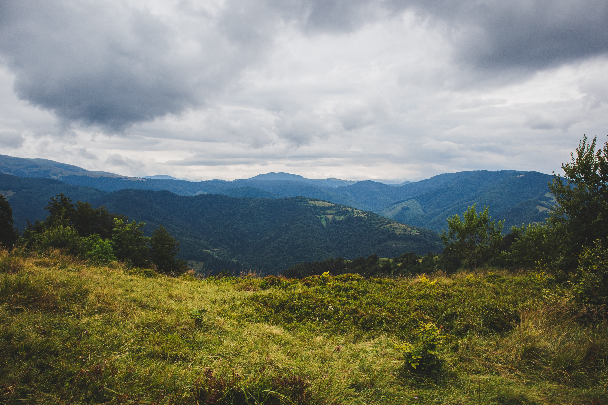

Обирай свій напрямок!

Волинь і Шацькі озера
Досвідчені мандрівники називають Шацькі озера "Ялтою для бідних", але в цілому це дуже цікаві місця, де є на що подивитися. Як, втім, і в цілому на Волині. Машина дозволить побачити все за пару днів і насолоджуватися повноцінним відпочинком на природі, рівну якій по красі в Україні важко знайти. Детальніше читайте на УНІАН
Обирай свій напрямок!
Карпати
Українська частина Карпат – місця таємничі, самобутні, сповнені духом природи та гір. Тут заховані прадавні таємниці гордої природи і розгадати їх можна лише тоді, коли здійснюєш сходження на вершини, пробираєшся глибокими печерами, долаєш втому та стихію, пливеш на човні за стрімкою течією, мандруєш смерековим лісом та поїдаєш смачні чорниці. Якщо досконалість існує, то Карпати – її віддзеркалення. Карпати – масштабні та багатогранні. Однієї відпустки точно не вистачить, щоб познайомитися з ними. Але після того, як побував уперше – постійно хочеться повертатися знову і знову. Тут почуваєшся наче удома. Оберіть для себе цікавий та посильний маршрут, дізнайтеся про природні об'єкти, які можна відвідати дорогою, складіть перелік необхідних речей.Саме момент підготовки допоможе вам здійснити подорож мрії незважаючи на те, скільки днів ви проведете у горах.